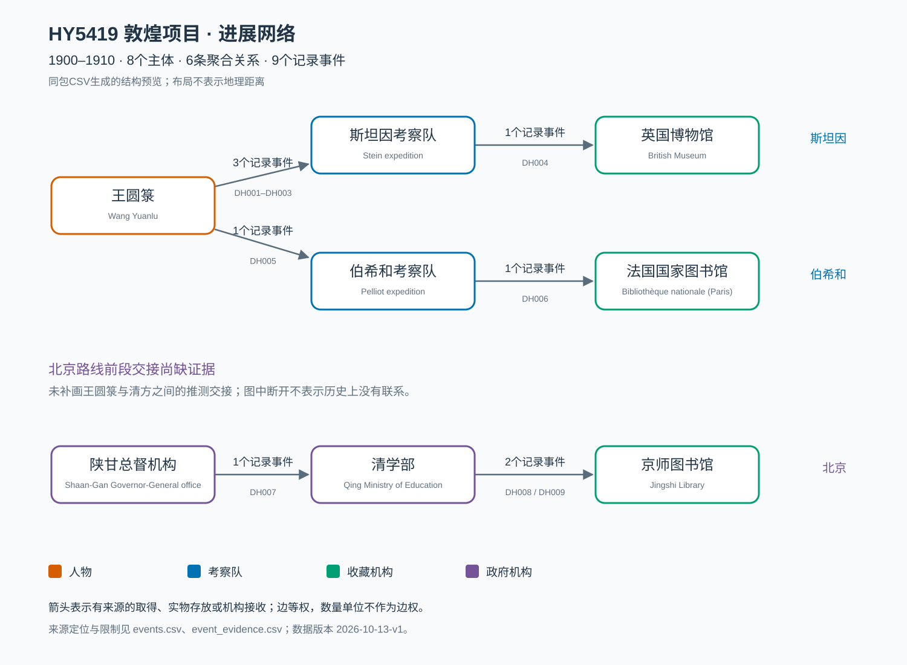

HY5419 敦煌项目：进展gephi数据集使用说明
版本：2026-10-13-v1。时间按新加坡日期记录。
本包研究1900–1910年藏经洞写本的早期取得、实物存放和机构接收。它根据你已经收集的文献及9月的审计记录整理，新增的外部资料仅为香港天文台1910年历表，用于清历日期换算。它是可继续补录的批次级进展数据，不是全部敦煌文献的流散清单，也没有完成对象级目录比较。
1. 最快开始：打开一个GEXF文件
- 启动Gephi，选择 File → Open，打开本文件夹中的 进展gephi数据集.gexf。
- 导入报告应显示 8个节点、6条边、Directed（有向），导入到一个新工作区。
- 进入 Overview。在Gephi 0.11.3中，点击图区域底部 Nodes尺寸滑块右侧的“小圆圈＋字母a”按钮，开启节点标签；鼠标悬停提示为 Show Node Labels。它位于带下划线的A图标左侧，T图标控制标签大小模式。文件已包含初始坐标、节点颜色和大小。
- 进入 Data Laboratory → Edges，查看
EventCount、EventIds、SourceRef。6条边的 EventCount 合计应为 9。
- 在 Preview 中启用节点标签与箭头，刷新预览，再导出SVG或PNG。通过 File → Save As 保存自己的
.gephi 工程。
打开GEXF后不用再导入同包CSV，否则可能重复添加数据。GEXF是交换数据格式，.gephi是Gephi保存的工程格式。本次交付未伪造原生工程文件。
GEXF和CSV的导入方式、保留字段依据：Gephi GEXF说明、Gephi CSV说明。不同界面语言的菜单名可能略有不同。
2. 选哪张图
| 文件 |
节点 / 边 |
适合的问题 |
进展gephi数据集.gexf |
8 / 6 |
哪些主体之间有文献支持的取得、存放或接收？ |
辅助_事件参与图/进展gephi数据集_事件参与图.gexf |
22 / 28 |
谁参与了哪次事件，参与角色是什么？ |
分路线/Stein.gexf |
3 / 2 |
斯坦因路线：4个记录事件 |
分路线/Pelliot.gexf |
3 / 2 |
伯希和路线：2个记录事件 |
分路线/Qing.gexf |
3 / 2 |
北京接收端：3个记录事件 |
这些文件都通过File → Open打开，每次使用新工作区。分路线图是主图的子集，不能把三个子图再作为新增数据追加到主图。子图保留全图节点属性，子图的Degree如需分析，应在子图重新运行统计。
主图的一条边是相同转出与接收主体之间的聚合关系。例如王圆箓→斯坦因队关联DH001、DH002、DH003三个取得阶段，但只绘制一条邻接边。三次取得仍在 events.csv 中逐条保存。
辅助图把9个事件也作为节点。transfer_from 是“转出主体→事件”，transfer_to 是“事件→接收主体”；其他边是“参与者→事件”，角色见 Role。例如蒋孝琬指向DH001表示谈判与搬运参与，不能解释为他个人持有材料并交给考察队。22个节点包含13个主体与9个事件，28条边是关联数，不是28次历史移交。藏经洞作为来源背景保存在 entities.csv 和 context_only.csv，未用地点节点替代持有人。
3. 用CSV导入
如果希望从表格开始，新建一个工作区：
- 在Data Laboratory使用 Import Spreadsheet / Import CSV，先导入根目录
nodes.csv，选择 Nodes table。
- 分隔符选英文逗号，编码选 UTF-8；确认首列为
Id，不是 Label。
- 再导入根目录
edges.csv，选择 Edges table，追加至同一个工作区，确认 Source、Target、Type、Weight 正确。
Type 为Directed；Weight 为数值，EventCount、YearStart、YearEnd 为整数，EventIds、SourceRef 等为字符串。关闭自动创建未知节点；本包所有端点均已定义。- 核对8节点、6边、事件计数合计9。CSV不包含Gephi的初始坐标及显示颜色，可按下一节设置。
辅助图也使用其子文件夹内的nodes和edges成对导入。不要直接把根目录 events.csv 当作主图边表导入：它是9条事件的权威研究表，同端点的重复事件可能被导入器合并。主图的 edges.csv 已有明确且经校验的聚合口径。
CSV使用UTF-8 BOM，方便Excel显示中文；表内多个来源用分号连接，CSV列分隔符仍然是逗号。空值表示未记录／未核实，不等于零。
4. 调整显示与做初步分析
主图预设颜色：人物为橙色、考察队为蓝色、收藏机构为绿色、政府机构为紫色。辅助图中的事件为灰色。可在 Appearance → Nodes → Partition → NodeType 调整。
初始节点大小相等。需要突出当前样本连接时，可使用 Appearance → Nodes → Ranking → Degree，将大小范围设为约15–35。主图的最大Degree为2，王圆箓、两个考察队和学部均为2，不能声称某一个节点独占中心。
RecordedEvents 表示该主体作为转出或接收端关联的事件数。例如王圆箓为4，斯坦因队为4；它不同于邻接Degree。每个事件涉及两端，所以所有节点的RecordedEvents合计为18，不是全图事件总数9。
所有主图边 Weight=1，表示等权邻接。可以把边标签 Label 显示出来查看“3个记录事件”等，或按 EventCount 做视觉粗细排名。不要将“捆”“箱”“卷”“粘片本”填成可比较的边权。若改成事件频数权重，应明确写出分析采用EventCount，不能沿用本包等权邻接的指标口径。
主图已用人工初始坐标排成可读结构，无需先运行力导向布局。辅助图可尝试ForceAtlas2，启用Prevent Overlap，稳定后停止，再用Noverlap处理遮挡。布局参数属于显示选择，空间远近不代表地理距离、传播速度或关系真实性。
需要统计时，先运行Average Degree，核对主图度数合计12、平均度1.5。分路线筛选优先直接打开对应子图。当前图小、样本不均且有证据缺口，不宜把介数、模块划分或中心性直接解释为历史权力、所有权、责任或“最重要人物”。
本包是静态图；YearStart和YearEnd是日期或不确定性属性，没有自动生成时间轴。一个“1909–1910”的范围表示存放时间的证据界限，不表示关系在这两年连续存在。若以后制作动态图，要先确认边表示瞬时事件还是持续保管，并审查日期范围。
5. 回到文献检查一条关系
以王圆箓→斯坦因队为例：
- 在
edges.csv 找到 L_N002_N006，读 EventIds=DH001;DH002;DH003。
- 在
events.csv 按EventId找到事件定义、月份、日期依据与数量差异。
- 在
event_evidence.csv 按 RecordId 找到来源逐项支持什么：事件、端点、时间、数量或参与角色。
- 在
sources.csv 按 SourceID 找到书目、项目相对路径与SHA256。路径均相对于 DunHuang Project，不是当前数据包。
- 用定位页码打开原文件。S07的印刷825页在6页摘录PDF中为第3页，扫描文件为
S07_scan_0313.jpg；OCR文件编号 00000301.txt 是另一套序号，不能直接当扫描编号。
25条来源登记中，有9条参与主事件证据，其中8条是历史文献／研究／机构叙述，1条为历表方法来源；这不代表25篇独立研究或9份独立档案。S01与S02是同篇Doumy研究的正式版和AAM；S03、S01转引Stein日记的部分也不能当作多个独立目击者。查 literature_coverage.csv 可见哪些来源仅作背景、导航、重复版本或元数据。
事件可信度本版统一为medium，表示存在可定位支持，但参与者自述、后出机构回顾或档案转录仍有核验限制。日期可信度另列；英国存放时间为low。可信度不是概率，也不裁定合法性。本次精读范围列在证据表和文献覆盖表中，没有声称逐页通读全部文献。
6. 这版修正了什么，仍缺什么
旧版E004与E007都引用24箱存入英国博物馆的同一句，现合并为DH004。E003改为搬运参与角色。E008保留为命令背景，不再作为王→清政府的实物交接。原N009从抽象的“北京接收体系”落实为京师图书馆；伯希和接收机构由S15正文推进为巴黎国立图书馆。详细旧新映射在 legacy_mapping.csv。
北京路线增加了1909样本送呈、1910十八箱取运及续交底账的区分。底账中的22卷＋粘片2本，与已收样本1卷的返还分开保存。全部数量版本在 quantities.csv；不能把各段取得、运输、存放数量重复累计为总件数。
续交底账的原日期为宣统二年十一月十四，本次据香港天文台历表换算为 1910-12-15；学部十一月十二行文对应 1910-12-13。这两个值是依据转录文本换算的派生日期，不是已核档案原件日期，不能写作公历1910-11-14／12。历表与说明
主图有两个弱连通组件：王圆箓及英法路线为一组，北京接收端为另一组。原因是王向清方实际交出与前段运输主体的证据链尚未落实；这不表示历史上不存在连接。gaps.csv 给出六类缺口及补证对象。不要通过添加猜测边把图强行接通。巴黎的机构回顾也未落实每件写本的交接凭证；本包不能直接证成“今日目录遮蔽中介”的对象级假设。
7. 文件用途与后续补录
| 文件 |
用途 |
entities.csv |
14个主体／地点的权威名称、别名、类型与来源；包括未进主图的参与者和来源地点 |
events.csv |
9个转移事件的权威表；每行一个事件 |
event_evidence.csv |
26条事件／背景证据，逐项注明支持范围、定位和依赖 |
event_participants.csv |
10条具来源的参与角色 |
quantities.csv |
14条分来源、分单位、分范围的数量记录 |
sources.csv / literature_coverage.csv |
来源登记、文件身份与实际使用范围 |
context_only.csv / gaps.csv / legacy_mapping.csv |
背景、缺证与旧版修订记录 |
nodes.csv / edges.csv / GEXF / node_metrics.csv |
从权威表生成的Gephi主图与指标；不直接手工修改 |
使用说明.html / 进展gephi数据集_结构预览.svg |
离线阅读说明与程序生成的结构预览；SVG不是Gephi界面导出 |
rebuild.py / render_delivery.py / validation_report.json / run-manifest.json |
数据重建、交付预览渲染脚本、校验结果与输入输出身份记录 |
补录时，先新增或核对实体ID，再新增唯一EventId，例如DH010；补上转出／接收主体、事件类型、日期依据和至少一条精确证据。按需更新participants与quantities。新的文献需在sources中登记本地路径及真实SHA256，同时更新coverage。行政命令、讨论、编目和可能发生的交接先入context或gaps，不能仅因为文献出现两个人名就生成转移边。
在终端进入本文件夹后运行：
python3 rebuild.py
python3 rebuild.py --check-only
数据重建脚本仅使用Python标准库。重建会更新本包的派生CSV、GEXF、指标与校验记录，保留权威输入CSV；不会修改原来的03_data_clean、旧Gephi工程或文献。补录后应同时更新本使用说明中的数量、版本和范围，不能只改图不改说明。
更新说明后运行 python3 render_delivery.py，可按最新派生表生成结构SVG与离线HTML。安装Python包markdown可得到格式化HTML；没有该包则生成可读的纯文本HTML。运行顺序为“rebuild → 修改说明 → render_delivery → rebuild”，最后一次rebuild将最新交付文件哈希记入清单。
校验覆盖ID唯一性、节点及事件端点、事件级证据闭合、文献文件哈希、旧ID映射、聚合事件计数和CSV/XML一致性。另已用独立NetworkX解析器读取5个GEXF。未在Gephi GUI中逐个导入点击验证；本机记录的Gephi版本为0.11.3，文件本身采用静态GEXF1.2以便交换。程序校验不能替代历史证据判断。
8. 导出图注与常见问题
建议图注：
HY5419敦煌项目进展网络，1900–1910。8个主体节点、6条聚合关系，关联9个有定位来源的转移事件。边等权，事件数量另存为属性；布局距离不是地理距离。北京前段交接证据尚缺。数据版本2026-10-13-v1。
辅助图图注应改为“13个主体＋9个事件节点，28条主体—事件关联”，不能沿用主图数量。
- 中文乱码：重新导入时选择UTF-8，避免用系统默认编码覆盖CSV。
- Unknown node：Source和Target必须匹配Id；不要用中文Label代替ID，不要选错辅助图表。
- 没有箭头：核对Directed并在Preview启用箭头，然后刷新。
- Overview没有名称：点击底部Nodes尺寸滑块右侧“小圆圈＋字母a”的Show Node Labels按钮。左上Appearance中的T是标签字号设置，底部T是大小模式，均不是显示开关。Preview的标签需另行启用Show Labels。
- 为什么只有6条边：9个事件已按主体对聚合；读EventCount，或打开保留事件节点的辅助图。
- 为什么有断开的部分：北京路线前段尚缺可落到主体的交接证据，见G01。
- 计数超过预期：不要将CSV追加到已经打开的GEXF；使用干净的新工作区。
- 双击没有打开：先启动Gephi再File → Open；本包不是通过双击打开的原生
.gephi工程。
进展gephi数据集：数据字典
版本2026-10-13-v1。主研究单位为有来源定位的取得／存放／接收事件；主图单位为相同转出、接收主体的聚合关系。全部CSV为UTF-8 BOM，逗号分隔。表内多值字段用分号连接。空白为未知或未记录，不等于零。
权威输入与派生文件
权威输入为entities、events、event_evidence、event_participants、quantities、sources、literature_coverage、context_only、legacy_mapping和gaps这十张CSV。nodes、edges、node_metrics及GEXF由rebuild.py生成。请修改权威输入后重建，不要同时维护两个互相冲突的版本。
稳定键：实体用N前缀，事件用DH，证据用EV，参与行用P，数量行用Q，背景用CTX，来源沿用项目S编号。Id是机器键，Label是显示名称。
entities.csv：实体登记
| 字段 |
类型 |
定义 |
| Id |
字符串，唯一 |
实体稳定键；沿用旧ID时说明语义修订 |
| Label / LabelEN |
字符串 |
中文显示名及英文／法文名 |
| NodeType |
分类字符串 |
Person人物、Expedition考察队、Institution接收机构、Government政府机构、SourceSite来源地点；辅助图另有Event |
| Place |
字符串 |
地点属性，不是地理坐标，也不额外制造城市节点 |
| HistoricalPolity |
字符串，可空 |
当时机构或行动相关政治背景；不是未核人员国籍 |
| Role |
字符串 |
已记录角色；不等于某一事件中的交接角色 |
| Alias |
多值字符串 |
人名、旧称、转写别名；不能单靠相似名字自动合并 |
| SourceRef |
多值字符串 |
定义该实体的来源ID |
| Core |
整数0/1 |
1表示本版主体交接主图节点；不是重要性等级 |
| Notes |
字符串 |
实体边界、机构沿革和未知项 |
历史节点N007为British Museum，N009为京师图书馆，N014为当时巴黎国立图书馆；现代名称不反推为1900年代交接主体。N008旧抽象清政府节点不继续进入本包主图。
events.csv：事件权威表
| 字段 |
类型 |
定义 |
| EventId |
字符串，唯一 |
一次取得阶段或一次可区分的接收批次 |
| Label |
字符串 |
事件的简明名称 |
| Source / Target |
字符串外键 |
转出／接收主体的实体Id；不是文献作者与被提及者 |
| Type |
固定字符串 |
Directed |
| Weight |
数值 |
固定1，每行一个记录事件；不按物件数量加权 |
| Route |
分类字符串 |
Stein、Pelliot、Qing；研究路线归组，不是完整旅行轨迹 |
| Relationship |
分类字符串 |
acquisition取得；physical_deposit实物存放；institutional_receipt机构接收；sample_submission样本送呈；supplementary_receipt续交接收 |
| YearStart / YearEnd |
整数 |
年精度或不确定日期的界限，不能当持续保管区间 |
| DateDisplay |
字符串 |
人可读的日期和精度限制；包含必要的派生换算说明 |
| DateOriginal |
字符串 |
保留原来源日数、纪年或相互不同的日期表述 |
| CalendarOriginal |
分类字符串 |
Gregorian或Qing_lunisolar；不得把清历月日直接当公历 |
| DatePrecision |
分类字符串 |
month、month_conflicting_days、year、year_end、year_range、year_inferred、year_with_terminus、day_from_transcription_calendar |
| DateBasis |
字符串 |
哪份文献、哪页支持日期；包括回推、换算和上下界的理由 |
| EventConfidence |
分类字符串 |
事件判断等级；本版为medium，有出处但保留来源限制 |
| DateConfidence |
分类字符串 |
独立于事件等级；本版为medium或low |
| EvidenceStatus |
分类字符串 |
来源获取与证据性质的状态，不是概率 |
| SourceRef |
多值字符串 |
全部用于本事件的来源ID；必须在证据表逐项闭合 |
| QuantitySummary |
字符串 |
人可读的数量口径；标量与单位见quantities |
| QuantityConflict |
字符串 |
不同版本、范围与单位的差异，以及禁止的加总 |
| EventGroupId |
字符串 |
相关取得阶段或接收组；同组不自动合并为一次事件 |
| LegacyId |
多值字符串，可空 |
旧试点记录；完整处置见legacy_mapping |
| Notes |
字符串 |
事件界定及未确认环节 |
documented_participant_account为参与者后出自述；documented_deposit_date_bounded为存放已述、时间仅有限界；documented_participant_and_institution为参与者与机构叙述；institutional_retrospective为机构回顾；archival_transcription_only为研究文章中的档案录文，本次未取得原件影像。
medium不表示事件“只有50%发生”；它标注仍需原档、日期或对象级核验。没有将本包关系标成high，也不将评级当作数值边权。
nodes.csv / edges.csv：主图派生表
nodes继承实体字段，另有：
| 字段 |
类型 |
定义 |
| GraphView |
字符串 |
actor_transfer_aggregated |
| InLinks / OutLinks |
整数 |
聚合邻接边的入度与出度 |
| Degree |
整数 |
InLinks＋OutLinks；本版最大2 |
| RecordedEvents |
整数 |
作为转出／接收端关联的不同事件数，不含纯参与角色 |
| Route |
多值字符串 |
该节点涉及的研究路线；共享节点可有多值 |
edges的关键字段：
| 字段 |
类型 |
定义 |
| Id |
唯一字符串 |
L_Source_Target，按有向主体对生成 |
| Source / Target / Type |
字符串 |
对应nodes.Id；Directed |
| Weight |
数值 |
固定1，等权邻接；6条边权重合计6 |
| Label |
字符串 |
n个记录事件，用于显示 |
| EventCount |
整数 |
相同主体对关联的独立记录事件数；全图合计9 |
| EventIds |
多值字符串 |
映射至events.EventId；原事件逐行保存 |
| Route / Relationship |
多值字符串 |
聚合范围内出现的路线和关系类型 |
| YearStart / YearEnd |
整数 |
组内最早与最晚事件年界限，不是持续关系时间 |
| SourceRef / EvidenceIds |
多值字符串 |
组内来源与证据行集合；不是独立佐证次数 |
| Confidence |
字符串 |
组内存在medium则为medium；不平均评级 |
| DateNotes |
字符串 |
各成员事件日期说明，保留不确定性 |
| GraphView / Notes |
字符串 |
视图及解释规则 |
聚合键为(Source,Target)，不同取得阶段保留EventId；目前每个主体对仅涉及一条路线。若以后同一主体对跨多个路线，分路线图应改为对筛选后的events重新聚合，以免带入另一条路线的EventCount。
event_evidence.csv：证据链
| 字段 |
定义 |
| EvidenceId |
唯一证据行键 |
| RecordId |
事件DH或背景CTX键 |
| SourceID |
sources外键 |
| Locator |
印刷页／PDF页／段落，注明具体版本；页码都从1开始 |
| ExcerptOriginal |
短原文摘录／扫描人工转录；S25为历表对照关系的文字转写 |
| ParaphraseZH |
中文转述，不能替代原文定位 |
| SupportFor |
本行支持的字段或判断，例如endpoints、date、roles、quantity_conflict；不意味着引文单独支持全部事件属性 |
| EvidenceNature |
参与者回顾、近同时自述、研究者转引、机构回顾、档案转录或历表 |
| Dependency |
是否依赖同一日记、书信、转载；防止将转引数量当独立证据 |
| Verification |
local_full_text、scan_checked等核验方式；不表示档案原件已核 |
| Limitation |
明确该证据尚不能证明什么 |
event_participants.csv与辅助图
ParticipationId为唯一行键，EventId与EntityId为外键，Role记录具体行为，SourceRef与Locator支持角色，Notes保留限制。同一参与者在同一事件的多个角色放在一行分号连接，不重复计为多个移交。
辅助节点中Bipartite=0为主体，=1为事件，GraphView=entity_event_incidence。辅助边Role=transfer_from或transfer_to时只表达事件关联端点；其他角色表达人对事件的参与。辅助图的Degree是关联度，不能与主图Degree混用。
quantities.csv：数量版本
| 字段 |
定义 |
| QuantityId / EventId / SourceID |
数量行键与事件、来源外键 |
| Value |
来源记数的非负数值；不自动成为精确事实 |
| Comparator |
reported原文记数、approximate约数、greater_than下界表述 |
| Unit |
bundles捆、cases箱、scrolls卷、bound_fragment_volumes粘片本；单位不能直接相加 |
| Material |
数量所指材料类别 |
| Coverage |
分项、替代版本、批次总括、伴随艺术品或既有样本返还等计数范围 |
| Locator / Notes |
定位与冲突、范围限制 |
13／20捆和220／230捆是同一事件的不同来源口径，不累计成额外事件；DH004存放数量是前段取得的后续叙述，不能再加到总取得量。DH009返还样本不算新增收藏。
来源与审计表
sources中SourceID为唯一键；Author、Year、Title、Citation、URL和DOI是书目登记；LocalPath相对于DunHuang Project；Status是实际获取状态；EvidenceType为来源性质；VersionGroup将同研究版本关联；UsedInCore标注是否用于主事件；Limitation保留限制；SHA256是当前本地文件内容身份。没有本地全文的来源仍可登记，但不得作为新增事件的全文证据。
literature_coverage的Disposition区分main_evidence、duplicate_version、context_or_archive_navigation、background_outside_transfer_unit、metadata_or_unavailable_not_event_evidence；CheckedScope明确本次检查范围。背景论文没有进入主图，并不表示其研究价值低。
context_only中MainGraphIncluded固定0；未知Target可空且不导入Gephi。legacy_mapping逐条列旧ID、旧关系、Action、新RecordId与Reason。gaps中的GapId、Route、MissingRelationOrFact、Reason、AvailableSources、NextEvidenceNeeded和EffectOnAnalysis用于后续补证，不能把缺口当零事件。
node_metrics是主图度数与事件关联数的只读快照；子图需重新计算其本地度数。run-manifest与validation_report分别记录计算运行和数据校验，均不能代替历史解释。